Gestio del domini LDAP
🔗 Consulta més comandes LDAP aquí
En aquest apartat farem una breu explicació i introducció a les comandes i com podem gestionar el nostre servidor LDAP: add, delete i modify.
Ja tenim el nostre LDAP configurat com hem fet en l’apartat anterior. Fem un slapcat per comprovar.
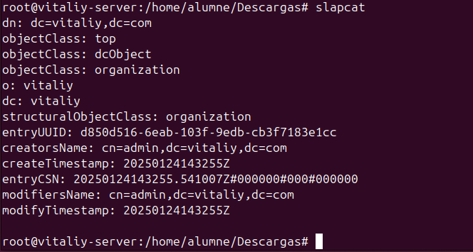
En el nostre cas, tinc dos fitxers: un per a modificar i l’altre amb totes les dades.
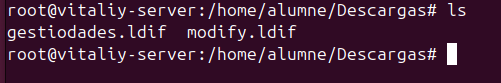
La informació que conté aquest fitxer és tota la relacionada amb els usuaris.
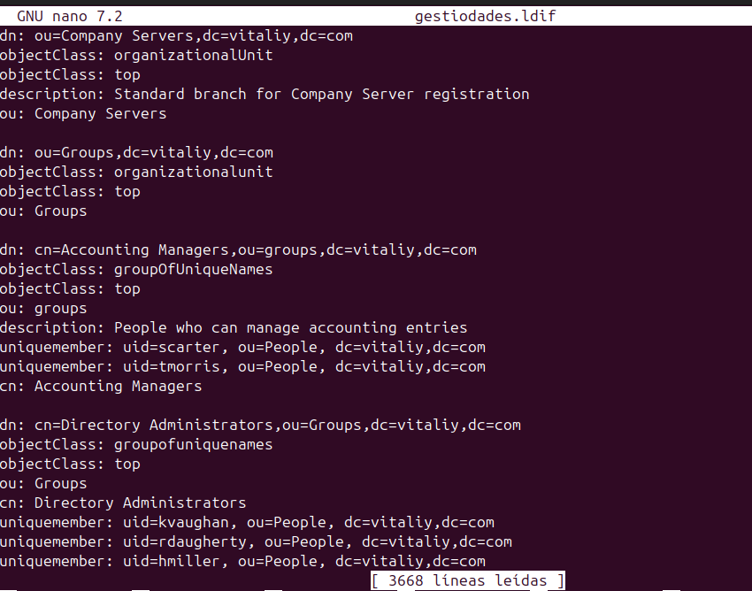
ldapadd
La comanda ldapadd serveix per afegir els fitxers al domini LDAP. Podem fer-ho utilitzant l'ordre següent per afegir un fitxer .ldif que contingui les dades necessàries:
ldapadd -c -x -D "cn=admin,dc=vitaliy,dc=com" -W -f gestiodades.ldif
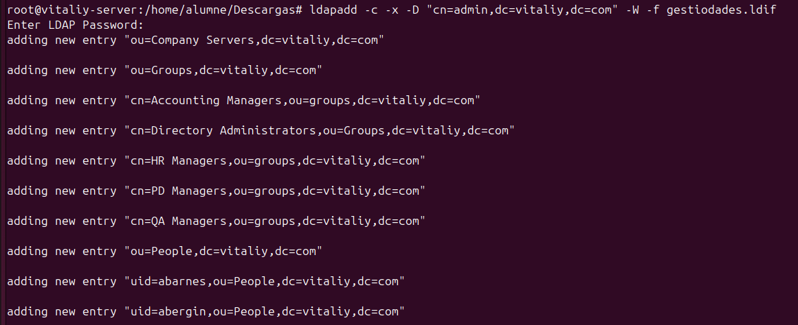
Afegir un nou usuari
Per afegir un nou usuari, creem un fitxer amb extensió .ldif que contingui el següent codi:
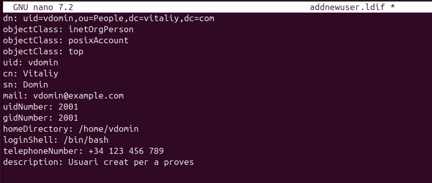
Un cop preparat, executem la comanda ldapadd per afegir l'usuari al domini.
Execució de la comanda
Utilitzem la següent comanda per afegir l’usuari:
ldapadd -x -D "cn=admin,dc=vitaliy,dc=com" -W -f addnewuser.ldif
Podem veure que l'usuari s'ha afegit correctament:
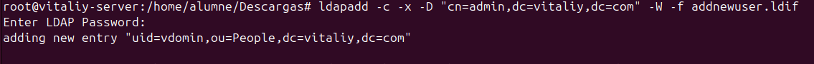
Comprovació
Finalment, realitzem una verificació amb la comanda ldapsearch per assegurar-nos que l'usuari s'ha creat correctament:
ldapsearch -xLLL -b "uid=vdomin,ou=People,dc=vitaliy,dc=com"
Resultat de la comprovació:
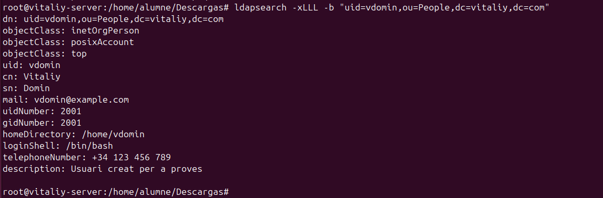
ldapsearch
El comandament ldapsearch és una eina molt útil per consultar informació dins d’un domini LDAP. Amb aquesta eina podem buscar entrades, comprovar atributs, filtrar resultats i molt més. A continuació, veurem algunes de les seves funcionalitats bàsiques.
Comprovació de les dades al domini
Ara que hem afegit el fitxer .ldif, comprovem que totes les dades estan correctament al domini. Això es pot fer amb la comanda ldapsearch:
ldapsearch -xLLL -b "dc=vitaliy,dc=com" dn | wc -l
Nota: Afegim
wc -lper fer un recompte de línies, ja que no volem que aparegui tot el text a la sortida.
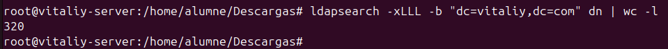
Comprovació de les Unitats Organitzatives (UOs)
També podem fer una cerca per trobar totes les Unitats Organitzatives (UOs) del domini utilitzant la comanda següent:
ldapsearch -xLLL -b "dc=vitaliy,dc=com" objectClass=organizationalUnit
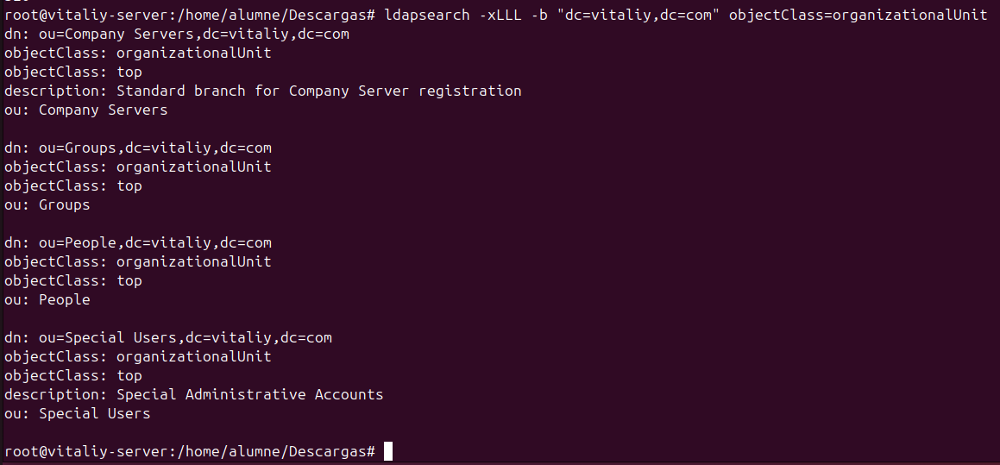
Comprovació de Grups
Si volem saber quants grups hi ha dintre de la uo Groups, podem executar aquesta comanda.
ldapsearch -xLLL -b "dc=vitaliy,dc=com" "(ou=Groups)" dn
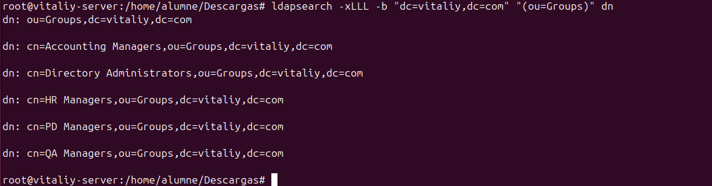
Per fer una cerca més específica
L’usuari kvaughan, en quants grups el trobem com a uniqueMember i quins són?
Per fer això, podem executar la següent comanda per llistar els grups on l’usuari kvaughan és membre únic:
ldapsearch -xLLL -b "dc=vitaliy,dc=com" "(uniqueMember=uid=kvaughan,ou=People,dc=vitaliy,dc=com)" dn
Per comprovar quants grups hi ha en total, podem afegir el wc -l (word count list) per fer el recompte:
ldapsearch -xLLL -b "dc=vitaliy,dc=com" "(uniqueMember=uid=kvaughan,ou=People,dc=vitaliy,dc=com)" dn | wc -l
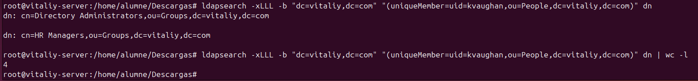
Cerca específica: Usuaris de People amb uid començant per k i part de Human Resources
Cerca usuaris que compleixen aquestes condicions:
uidcomença perk.- Atribut
ou=Human Resources.
ldapsearch -xLLL -b "ou=People,dc=vitaliy,dc=com" "(&(uid=k*)(ou=Human Resources))" dn
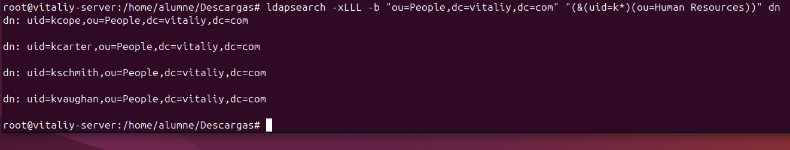
Llista de Comandes LDAPSEARCH
A continuació tens un conjunt de comandes LDAPSEARCH per consultar diferents dades del domini. Pots copiar i enganxar-les segons les teves necessitats.
-
Buscar un usuari específic amb els seus atributs (DN, nom, cognom i correu electrònic):
ldapsearch -xLLL -b "dc=vitaliy,dc=com" uid=usuari dn cn sn mail -
Buscar tots els grups d’un domini (on l'objectClass és `posixGroup`):
ldapsearch -xLLL -b "dc=vitaliy,dc=com" objectClass=posixGroup -
Buscar usuaris amb un domini de correu concret (exemple: usuaris amb correus @gmail.com):
ldapsearch -xLLL -b "dc=vitaliy,dc=com" mail=*gmail.com -
Buscar usuaris amb un uidNumber específic o en un rang:
Usuaris amb un uidNumber igual o superior a 1002:
Usuaris amb un uidNumber entre 1010 i 1030 (inclosos):ldapsearch -xLLL -b "dc=vitaliy,dc=com" "uidNumber>=1002"ldapsearch -xLLL -b "dc=vitaliy,dc=com" "(&(uidNumber>=1010)(uidNumber<=1030))" -
Buscar usuaris que compleixin una condició OR (per exemple, el nom comenci per "M" o tinguin un correu definit):
ldapsearch -xLLL -b "dc=vitaliy,dc=com" "(|(cn=M*)(mail=*))" -
Buscar usuaris que compleixin una condició AND (per exemple, el nom comenci per "M" i tinguin un correu definit):
ldapsearch -xLLL -b "dc=vitaliy,dc=com" "(&(cn=M*)(mail=*))" -
Buscar usuaris amb un atribut específic (exemple: usuaris amb un número de telèfon):
ldapsearch -xLLL -b "dc=vitaliy,dc=com" telephoneNumber=* -
Buscar usuaris dins d'una UO concreta (per exemple, dins de "People"):
ldapsearch -xLLL -b "ou=People,dc=vitaliy,dc=com" objectClass=inetOrgPerson -
Buscar usuaris on el telèfon acabi en un número específic (exemple: telèfons que acaben en 2):
ldapsearch -xLLL -b "dc=vitaliy,dc=com" telephoneNumber=*2 -
Buscar grups dins d'una UO específica (per exemple, dins de "Groups"):
ldapsearch -xLLL -b "ou=Groups,dc=vitaliy,dc=com" objectClass=posixGroup
Creació d'una nova UO
Per crear una nova Unitat Organitzativa (UO) anomenada "asix", necessitem preparar un fitxer .ldif amb la configuració de la nova UO. Un exemple del contingut del fitxer seria el següent:
dn: ou=asix,dc=vitaliy,dc=com
objectClass: top
objectClass: organizationalUnit
ou: asix
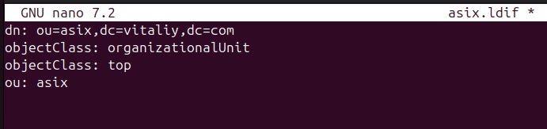
Després, utilitzarem la comanda ldapadd per afegir la UO al domini:
ldapadd -x -D "cn=admin,dc=vitaliy,dc=com" -W -f asix.ldif
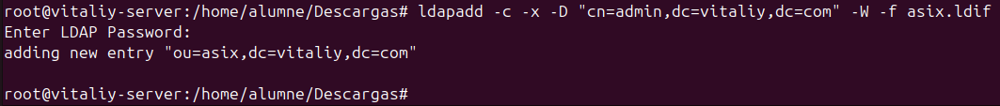
Un cop completada l’operació, la UO "asix" es crearà dins del domini. Per verificar-ho, podem utilitzar la següent comanda:
ldapsearch -xLLL -b "dc=vitaliy,dc=com" objectClass=organizationalUnit uo
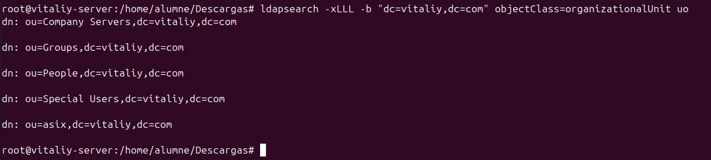
Amb això, assegurem que la nova UO ha estat afegida correctament.
ldapdelete
Hi ha dues maneres de fer esborrats en un domini LDAP: utilitzar la comanda ldapdelete o utilitzar un fitxer .ldif amb ldapmodify.
Esborrar atributs d’un usuari amb ldapmodify
Per esborrar atributs d’un usuari, primer necessitem crear un fitxer .ldif amb les modificacions que volem aplicar. En aquest cas, esborrarem l’atribut roomNumber de l’usuari ejohnson.
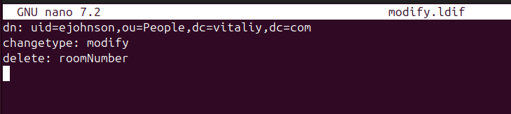
Després, executem la comanda ldapmodify per aplicar els canvis:
ldapmodify -x -D "cn=admin,dc=vitaliy,dc=com" -W -f modify.ldif
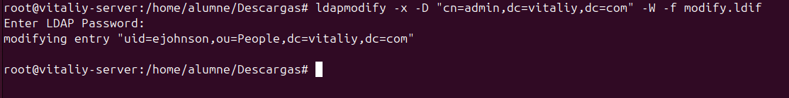
Finalment, fem un ldapsearch per comprovar que l’atribut roomNumber s’ha esborrat correctament:
ldapsearch -xLLL -b "uid=ejohnson,ou=People,dc=vitaliy,dc=com"
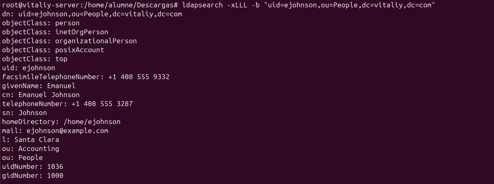
Esborrar una entrada amb ldapdelete
Podem utilitzar la comanda ldapdelete per eliminar directament una entrada del domini. Per exemple, per esborrar una unitat organitzativa anomenada "prova":
ldapdelete -x -D "cn=admin,dc=vitaliy,dc=com" -W "ou=prova,dc=vitaliy,dc=com"
Esborrar una entrada amb un fitxer .ldif i ldapmodify
També podem crear un fitxer .ldif amb les instruccions d'esborrat. Exemple del contingut del fitxer .ldif:
dn: ou=prova,dc=vitaliy,dc=com
changetype: delete
Després, executem la comanda següent per aplicar l'esborrat:
ldapmodify -x -D "cn=admin,dc=vitaliy,dc=com" -W -f dades.ldif
ldapmodify
Modificar dades de l'usuari ejohnson
Anem a modificar algunes dades de ejohnson, concretament el número de telèfon i el correu electrònic.
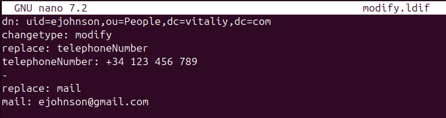
Executem la comanda del ldapmodify per aplicar els canvis i, posteriorment, fem un ldapsearch per verificar els canvis cercant únicament pel telèfon i el correu electrònic.
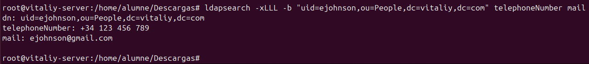
Canviar usuaris de grup amb ldapmodify
Anem a canviar 3 usuaris del seu grup principal i els anem a posar dins del grup de asix.
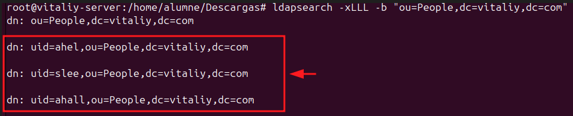
Crearem el fitxer de modificació i posteriorment l'executarem.
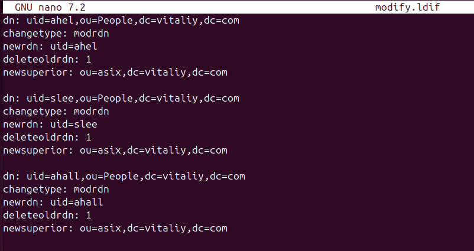
Codi de Exemple
Copia el següent codi i guarda’l en un fitxer `.ldif` per aplicar els canvis:
dn: uid=ahel,ou=People,dc=vitaliy,dc=com
changetype: modrdn
newrdn: uid=ahel
deleteoldrdn: 1
newsuperior: ou=asix,dc=vitaliy,dc=com
dn: uid=slee,ou=People,dc=vitaliy,dc=com
changetype: modrdn
newrdn: uid=slee
deleteoldrdn: 1
newsuperior: ou=asix,dc=vitaliy,dc=com
dn: uid=ahall,ou=People,dc=vitaliy,dc=com
changetype: modrdn
newrdn: uid=ahall
deleteoldrdn: 1
newsuperior: ou=asix,dc=vitaliy,dc=com
Executem la comanda per comprovar si realment s'han canviat d'OU:
ldapsearch -xLLL -b "ou=asix,dc=vitaliy,dc=com"
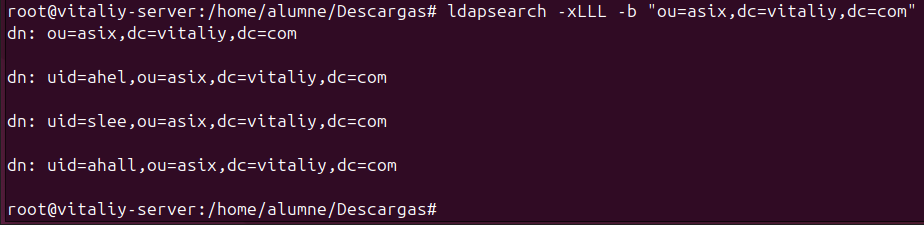
Modificar diversos paràmetres
També podem modificar diversos paràmetres d'un mateix usuari. En aquest cas, realitzarem múltiples accions sobre l'usuari vdomin. Això es pot fer mitjançant dos fitxers .ldif separats o executant dues vegades el fitxer modify.ldif amb informació diferent.
Les accions que realitzarem són les següents:
- Modificació: Canviarem el número de telèfon.
- Afegir: Afegeix un correu electrònic inventat i la ciutat de residència.
- Moure: Canviarem la UO de
Peopleaasix.
Fitxer per editar les dades
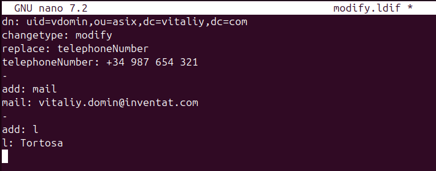
Resultat de moure l'usuari a la UO asix
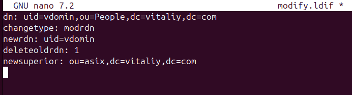
Execució dels fitxers
Executem els fitxers .ldif i comprovem que els canvis s'han aplicat correctament:
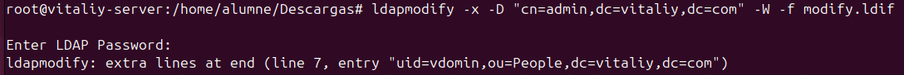
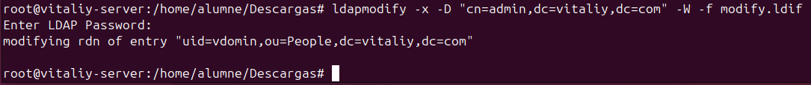
Verificació final
Per assegurar-nos que l'usuari s'ha mogut correctament a asix i que els atributs s'han modificat, fem servir la comanda següent:
ldapsearch -xLLL -b "uid=vdomin,ou=asix,dc=vitaliy,dc=com"
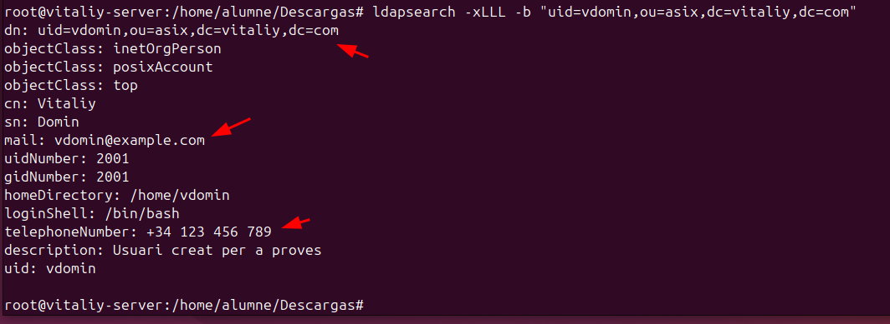